Настройка
рабочей среды с помощью pass и chezmoi
Студент: Туйишиме Тьерри
Группа: НКАбд-05-25
Факультет физико-математических и естественных
наук
РУДН
Цель работы
Настройка рабочей среды с помощью менеджера паролей pass и системы
управления конфигурациями chezmoi.
Задачи
- Установка и настройка Pass
- Настройка интерфейса с браузером
- Управление файлами конфигурации
- Использование chezmoi на нескольких машинах
Установка Pass
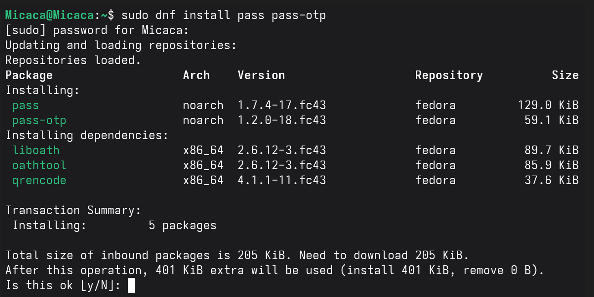
Установка pass
Установка pass и pass-otp
Установка gopass
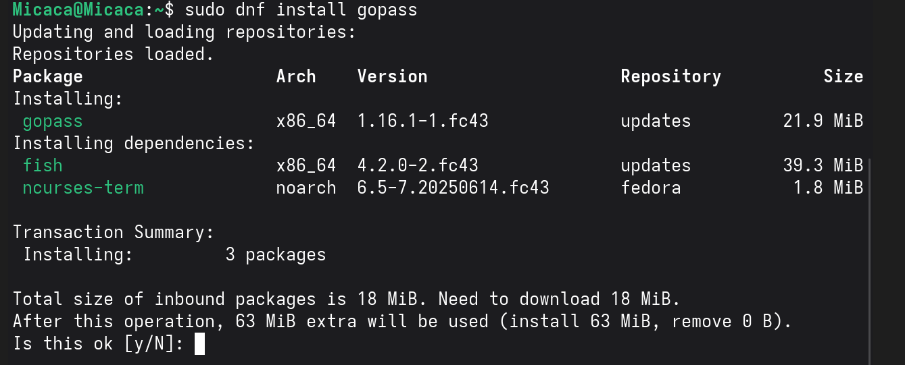
Установка gopass
Установка дополнительного менеджера паролей
Создание GPG ключа
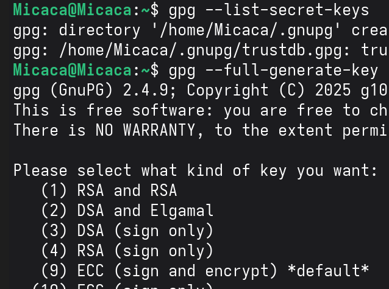
Создание ключа
Генерация ключа для шифрования паролей
Созданные ключи
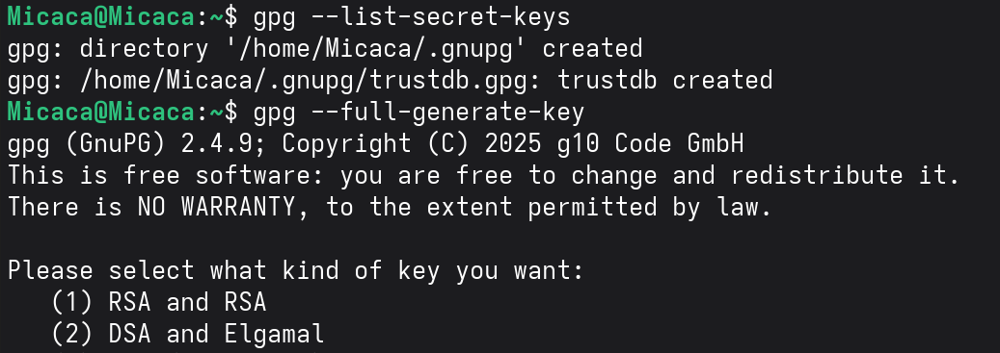
Созданные ключи
Просмотр созданных GPG ключей
Инициализация хранилища
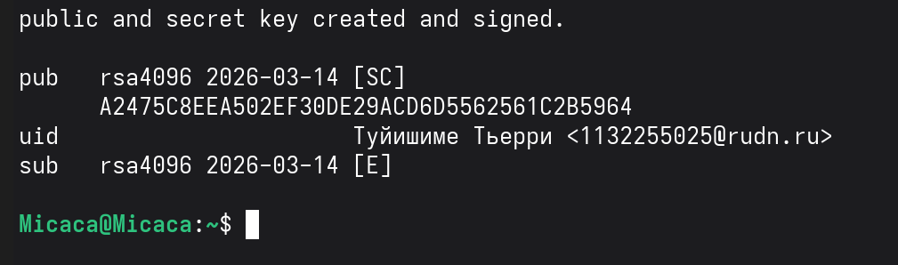
Инициализация
Инициализация password-store с GPG ключом
Статус синхронизации
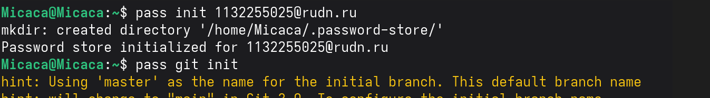
Статус
Проверка Git-статуса хранилища
Настройка browserpass
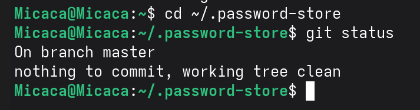
Browserpass
Установка плагина для Firefox
Включение репозитория Copr
Включение Copr
Добавление репозитория для browserpass-native
Установка browserpass-native
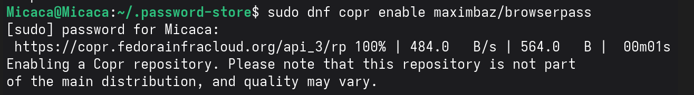
Установка native
Установка native messaging host
Добавление пароля
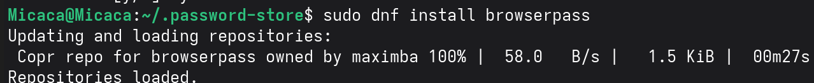
Добавление пароля
Создание нового пароля в хранилище
Подтверждение пароля
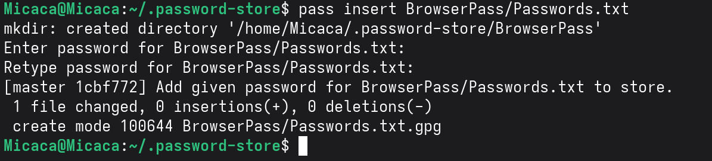
Подтверждение
Проверка созданного пароля
Замена пароля
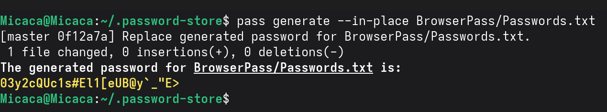
Замена
Генерация нового пароля
Установка дополнительного ПО
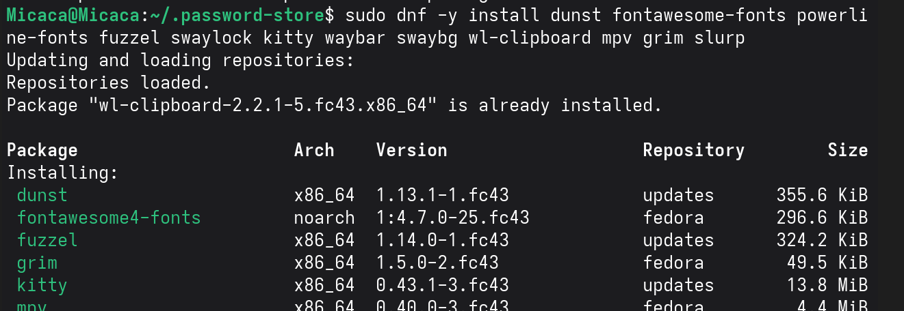
Установка ПО
Установка make, git, ShellCheck
Установка шрифтов Iosevka
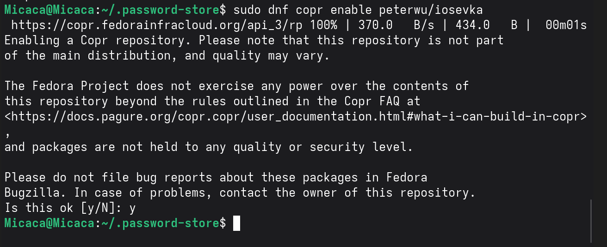
Включение репозитория
Добавление репозитория peterwu/iosevka
Поиск шрифтов
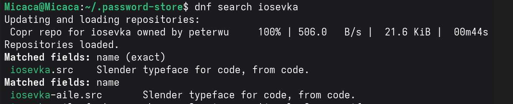
Поиск шрифтов
Поиск пакетов iosevka
Установка шрифтов
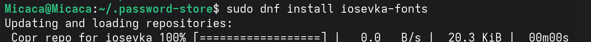
Установка шрифтов
Установка iosevka-fonts
Установка chezmoi
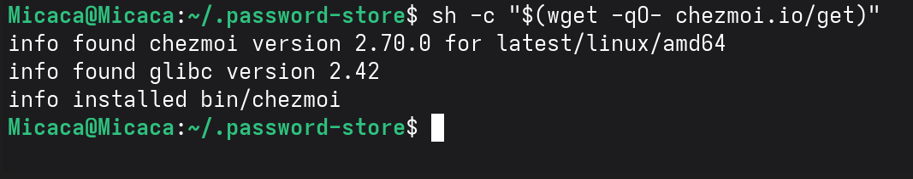
Установка chezmoi
Установка бинарного файла chezmoi
Создание репозитория
dotfiles
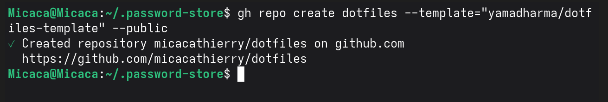
Создание репозитория
Создание репозитория на GitHub
Инициализация chezmoi
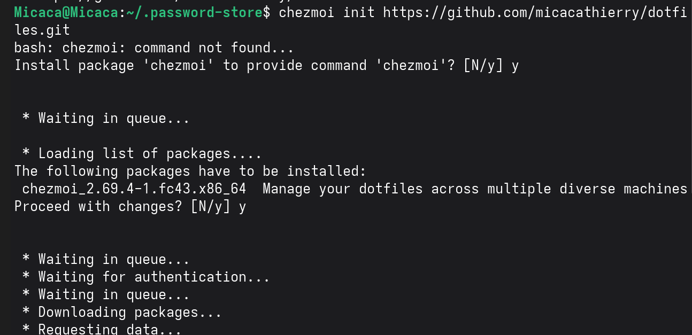
Инициализация chezmoi
Инициализация с репозиторием dotfiles
Проверка изменений
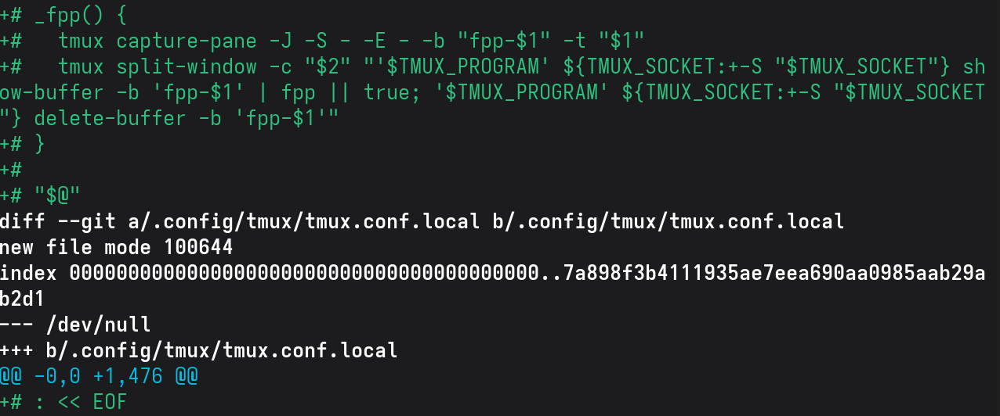
Проверка изменений
Просмотр различий с помощью chezmoi diff
Применение изменений
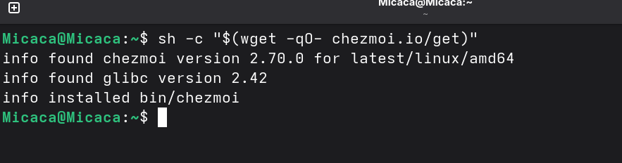
Применение изменений
Применение конфигурации chezmoi apply
Установка на другой машине
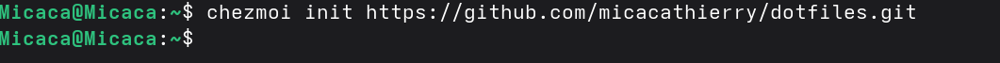
Установка на другой машине
Установка chezmoi на вторую машину
Инициализация на другой
машине
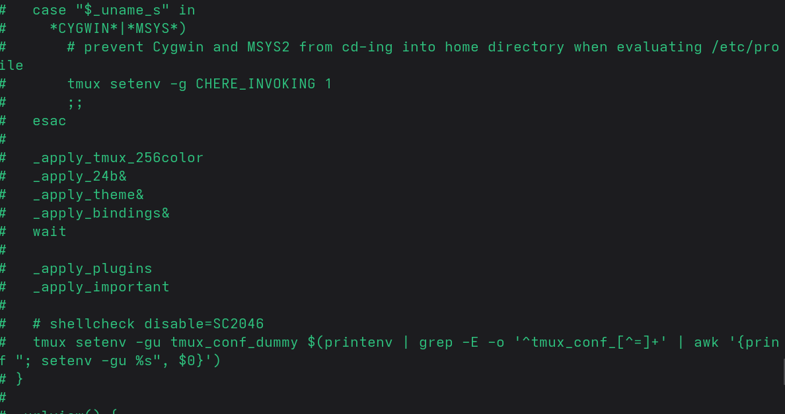
Инициализация на другой
машине
Инициализация с тем же репозиторием
Проверка на второй машине
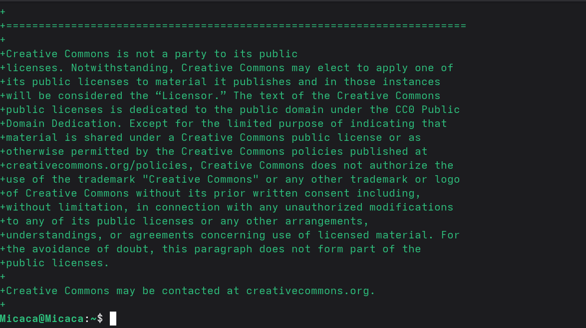
Проверка на второй машине
Просмотр изменений на второй машине
Применение на второй машине
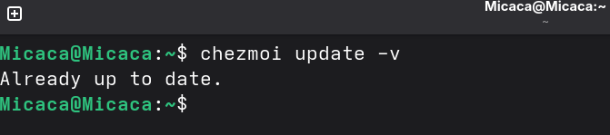
Применение на второй машине
Применение изменений на второй машине
Обновление chezmoi
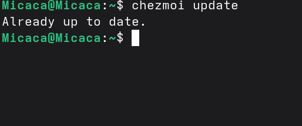
Обновление chezmoi
Обновление до последней версии
Ежедневные операции
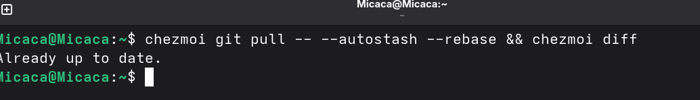
Ежедневные операции
Обновление на основной машине
Извлечение изменений
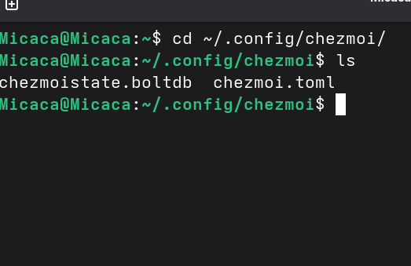
Извлечение изменений
Выполнение git pull с chezmoi
Применение изменений
после обновления
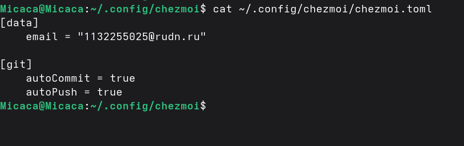
Применение после обновления
Применение актуальных изменений
Конфигурация chezmoi
 Конфигурация
Конфигурация
Настройки автоматического коммита и пуша
Выводы
- Настроен менеджер паролей pass с GPG шифрованием
- Интегрирован pass с браузером через browserpass
- Установлена и настроена система управления конфигурациями
chezmoi
- Освоена синхронизация конфигураций между несколькими машинами
- Настроено автоматическое сохранение изменений в репозиторий
Спасибо за внимание!
Вопросы?